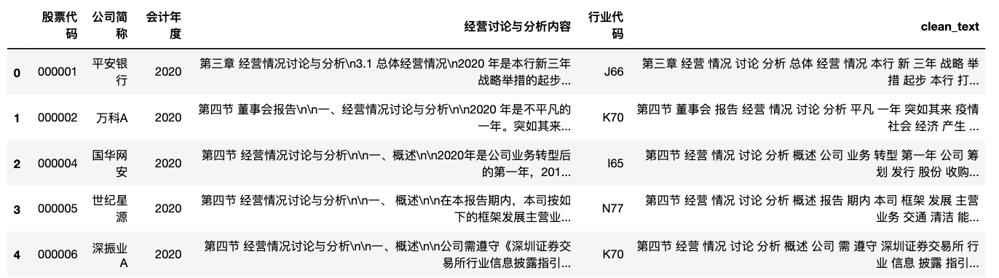

宋建波,冯晓晴.关键审计事项信息含量与公司债券发行定价——基于文本相似度视角[J].会计研究,2022,(03):174-191.

摘要
关键审计事项是来自审计师视角的信息， 其蕴含的特质性信息对实现沟通价值至关重要。本文采用文本分析方法计算的文本相似度衡量关键审计事项特质性信息含量，考察其对公司债券发行定价的影响。 结果发现， 以较低文本相似度代表的较高关键审计事项信息含量能够降低公司债券发行定价。 较高的审计师专业胜任能力 和独立性能够增强关键审计事项信息含量对公司债券发行定价的降低作用。 信息不对称的缓解是关键审计事项 信息含量降低公司债券发行定价的具体影响渠道。考虑关键审计事项类型后发现， 关联交易类关键审计事项信 息含量对公司债券发行定价的降低作用更强。本文研究结论有助于未来改进关键审计事项的披露要求。
关键词: 关键审计事项; 公司债券; 发行定价; 信息含量; 文本相似度
一、信息含量算法
文中关键审计事项信息含量算法

本文不仅限于关键审计事项，在别的应用场景中也可以使用相似度计算得到信息含量。这里将算法再简化为文本向量化，依次计算得到该企业的企业向量、该企业所在行业的行业向量、信息含量(特质性)。大致的算法思路如下
- 使用sklearn，将该企业文本(审计报告文本)转为TF-IDF的企业向量。
- 当年同行业所有企业(排除该公司)向量求均值，得到行业向量。
- 计算企业向量与行业向量余弦值，乘以(-1)，得到该企业的特质性的信息含量
二、信息含量算法实现
计算关键审计事项信息含量，需要有审计报告、行业。这里参考论文，使用md&a文本 和 md&a数据,用于计算 企业信息含量(特质性) 。
为了减少计算工作量，这里只准备了 2020 年的数据。
2.1 读入数据
import pandas as pd
# converters 强制声明该列为字符串， 防止股票代码 被程序识别为数字，
df = pd.read_excel('mda2020.xlsx', converters={'股票代码': str})
#显示前5行
df.head()
2.2 数据筛选
行业内企业数量过少，会导致行业向量与某个或某几个企业向量相关性增大，极端情况下，一个企业就是一个行业。
df['行业代码'].value_counts()
C39 419
C26 272
C35 256
C38 254
I65 250
...
M75 1
R88 1
O80 1
B10 1
E49 1
Name: 行业代码, Length: 81, dtype: int64
剔除掉企业数较少的行业，这里只保留大于20的行业。
ind_codes = df['行业代码'].value_counts()
ind_codes = ind_codes[ind_codes>20].index
ind_codes
Index(['C39', 'C26', 'C35', 'C38', 'I65', 'C27', 'C34', 'C36', 'K70', 'C30',
'F52', 'C29', 'F51', 'C32', 'C33', 'D44', 'I64', 'E48', 'C40', 'C14',
'C37', 'N77', 'J67', 'L72', 'C13', 'M74', 'C15', 'C17', 'C18', 'J66',
'G54', 'C22', 'C31', 'G55', 'E50', 'C28', 'D45', 'R86', 'R85', 'C21',
'B06', 'C41', 'B09', 'J69'],
dtype='object')
def filter_industry(ind_code):
try:
if ind_code in ind_codes:
return True
else:
return False
except:
return False
df2 = df[df['行业代码'].apply(filter_industry)]
df2.head()
2.3 文本向量化
使用sklearn，将该企业文本(审计报告文本)转为TF-IDF的企业向量。步骤
- 分词整理
- tfidff文本向量化
- 合并多个字段为新的df
import cntext as ct
import jieba
import re
stopwords = ct.load_pkl_dict('STOPWORDS.pkl')['STOPWORDS']['chinese']
def transform(text):
#只保留md&a中的中文内容
text = ''.join(re.findall('[\u4e00-\u9fa5]+', text))
#剔除停用词
words = [w for w in jieba.cut(text) if w not in stopwords]
#整理为用空格间隔的字符串(类西方语言文本格式)
return ' '.join(words)
df2['clean_text'] = df2['经营讨论与分析内容'].apply(transform)
df2.head()

from sklearn.feature_extraction.text import TfidfVectorizer
cv = TfidfVectorizer(min_df=0.05, max_df=0.5)
# 生成稀疏bow矩阵
#dtm 文档-词频-矩阵
dtm2020 = cv.fit_transform(df2['clean_text'])
dtm2020 = pd.DataFrame(dtm2020.toarray())
dtm2020.head()
#合并多个字段为新的df
dtm2020_ = pd.concat([df2[['股票代码', '会计年度', '行业代码']], dtm2020], axis=1)
dtm2020_.head()
2.4 计算2020年信息含量
- 使用sklearn，将该企业文本(审计报告文本)转为TF-IDF的企业向量。
- 当年同行业所有企业(排除该公司)向量求均值，得到行业向量。
- 计算企业向量与行业向量余弦值，乘以(-1)，得到该企业的特质性的信息含量
import os
import pandas as pd
from sklearn.metrics.pairwise import cosine_similarity
import numpy as np
import csv
with open('信息含量2020.csv', 'a+', newline='', encoding='utf-8') as csvf:
fieldnames = ['股票代码', '会计年度', '行业代码', '信息含量']
writer = csv.DictWriter(csvf, fieldnames=fieldnames)
writer.writeheader()
for idx in range(len(dtm2020_)):
try:
code = dtm2020_.loc[idx, '股票代码']
ind = dtm2020_.loc[idx, '行业代码']
year = dtm2020_.loc[idx, '会计年度']
#企业向量
corp_vec = [dtm2020_.iloc[idx, 3:].values]
corp_arr = np.array(corp_vec)
#行业向量
ind_vec = [dtm2020_[dtm2020_['行业代码']==ind][dtm2020_['股票代码']!=code].iloc[:, 3:].mean(axis=0).values]
ind_arr = np.array(ind_vec)
#信息含量
special_info = -1 * cosine_similarity(corp_arr, ind_arr)[0][0]
data = dict()
data['股票代码'] = code
data['行业代码'] = ind
data['会计年度'] = year
data['信息含量'] = special_info
writer.writerow(data)
except:
pass
欣赏一下结果
import pandas as pd
idf = pd.read_csv('信息含量2020.csv')
print(len(idf))
idf.head()
三、讨论
最近陆续分享了几篇文本相似度、信息含量的论文
- [1]姜富伟,胡逸驰,黄楠.央行货币政策报告文本信息、宏观经济与股票市场[J].金融研究,2021,(06):95-113.
- [2]宋建波,冯晓晴.关键审计事项信息含量与公司债券发行定价——基于文本相似度视角[J].会计研究,2022,(03):174-191.
- [3]孟庆斌,杨俊华,鲁冰.管理层讨论与分析披露的信息含量与股价崩盘风险——基于文本向量化方法的研究[J].中国工业经济,2017,(12):132-150.
比较一下,三者均先使用了文本向量化，将本文数据转为向量。每篇论文的算法
| 论文 | 指标 | 算法 |
|---|---|---|
| [1] | 文本相似度 | 将央行货币政策报告向量化， 临近的两个报告文本向量计算相似度，相似度越高，金融市场波动性越小。 |
| [2] | 信息含量 | 将同行业内所有企业向量Corp求均值得到行业向量Ind，求Corp与Ind的余弦相似度，并将结果乘以(-1),所得结果定义为信息向量。 |
| [3] | 信息含量 | 文本向量化+计量建模，认为md&a中的信息向量Norm可以由市场Norm_Market、行业Norm_Industry、企业异质性μ三种信息向量组成，通过计算 Norm = a0 + a1*Norm_Industry + a2*Norm_Market + μ ，将μ 向量的绝对值和作为信息含量，而a1+a2看标准信息。 |
从中可以看到两个向量的余弦相似度，在不同场景，解读含义是不同的，亦正亦邪。在货币政策中，相似度越高，表示越政策稳定，金融市场波动星越小。而在关键审计场景中，特质性信息是缓解公司与投资者信息不对称的关键，公司向量Corp与行业向量Ind相似度越高，表示公司审计报告文本特质性信息越少。
代码获取
- 代码及视频讲解已经添加至 支持开票 | Python实证指标构建与文本分析 中，感兴趣的同学欢迎订阅该系列课，涵盖Python语法入门、数据采集、文本分析、机器学习等。
- 数据&代码创作不易， 如果需要源代码和数据， 点击进入购买链接